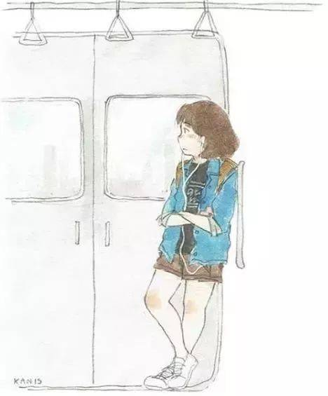
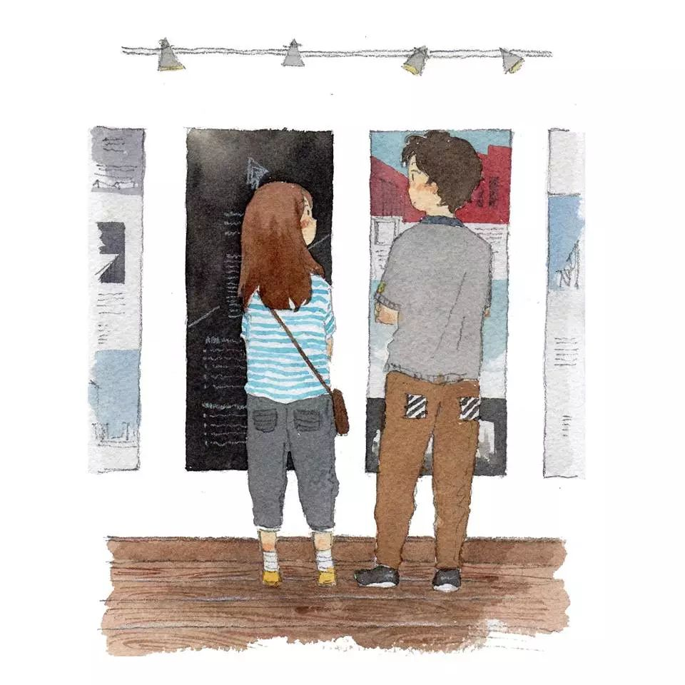
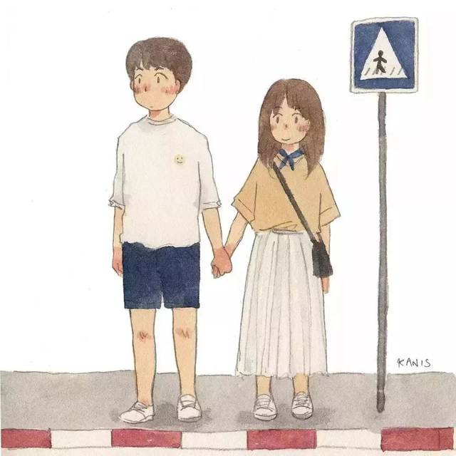
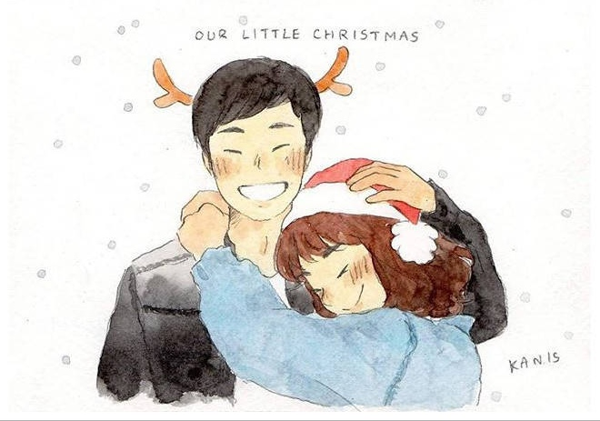
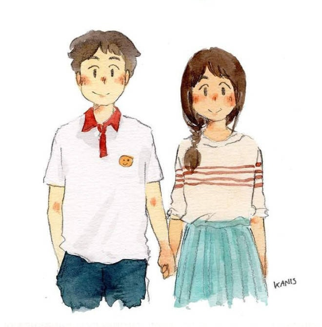
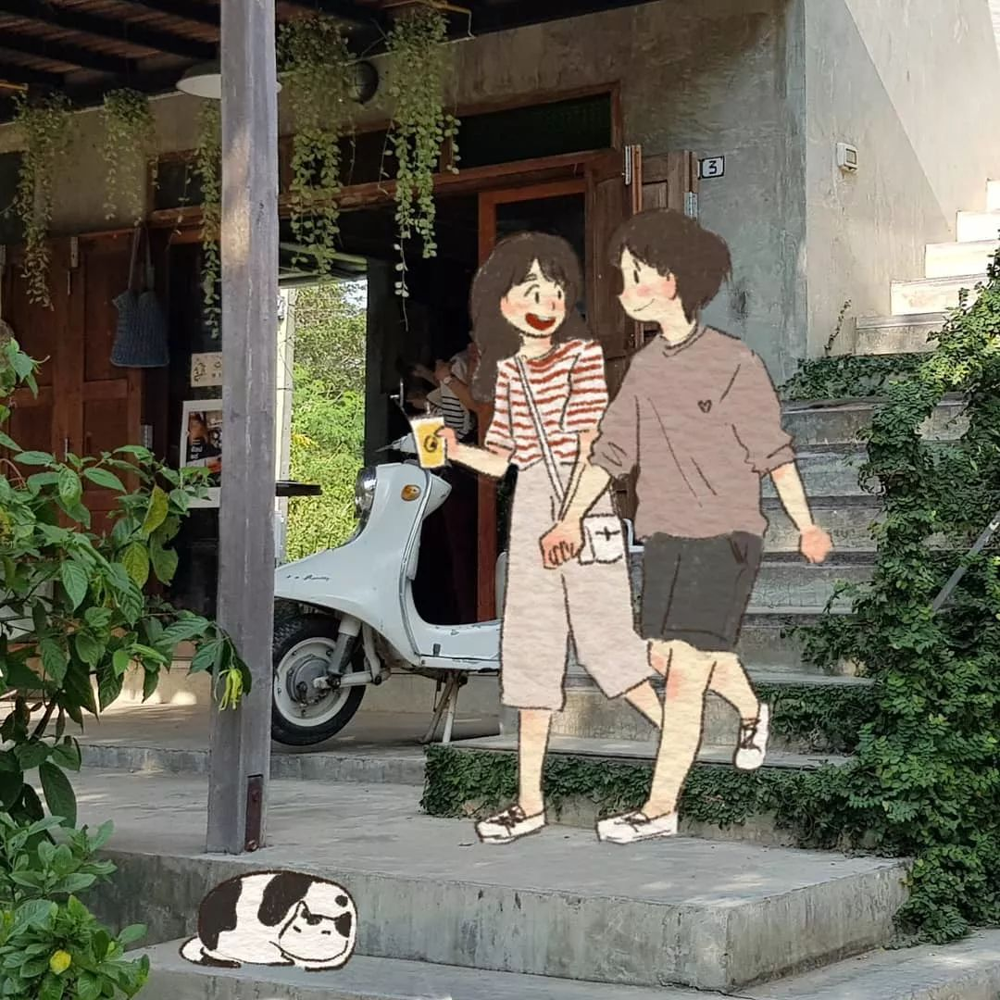
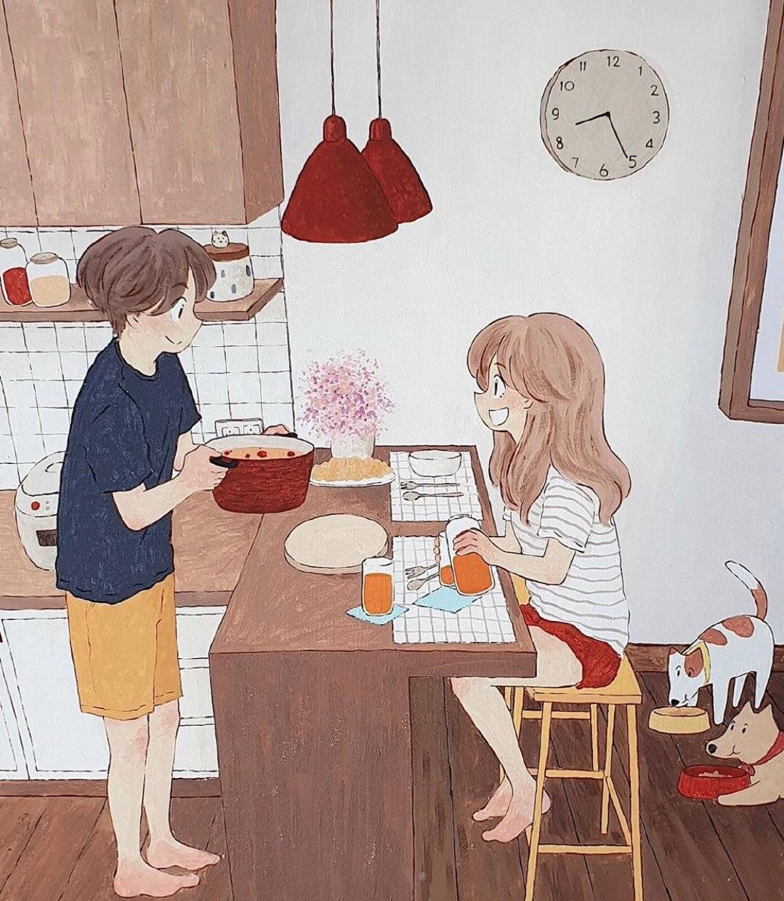
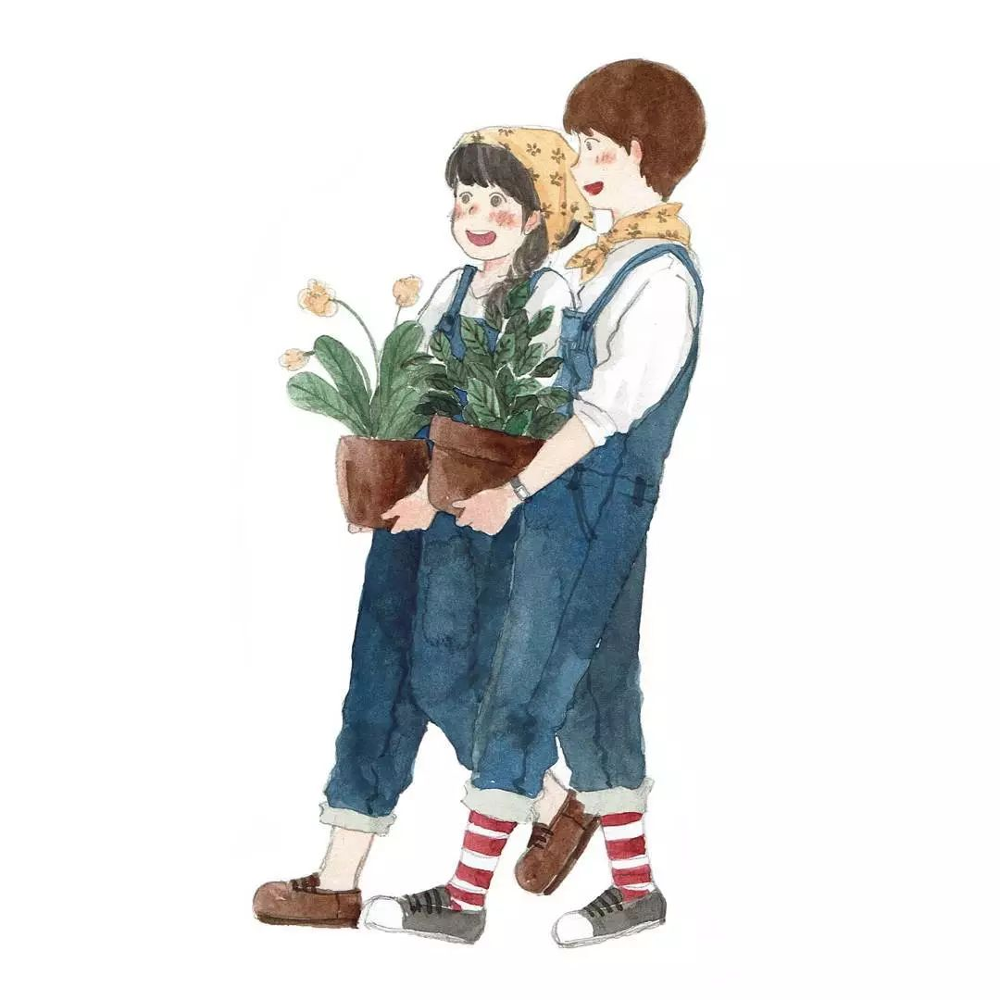
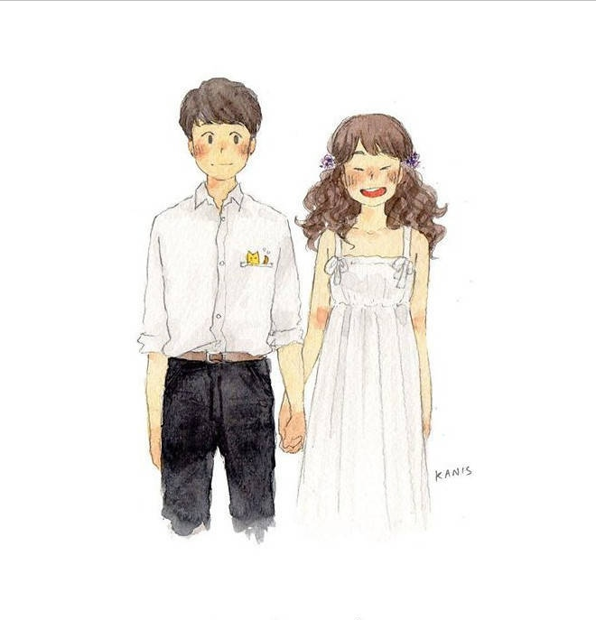

I love you three thousand.
Dear Mr.Yu:
Please press "↓" and ready for me~
嘿！
我是一个脾气超好
爱吃爱睡
笑点很低
自诩可爱
有点懒散
不爱运动
喜欢唱歌
喜欢追剧
常常幻想
粗心大意
不太聪明
有点努力的
不完美女孩
总是一个人听歌
一个人坐地铁
一个人面对讨厌的下雨天
生活处处充满惊喜
而这一次的特别安排
是刚好遇见你
期待每天听到你的消息
期待一起朝着更好的方向前进
走过很长很长的路
逛过熙熙攘攘的街

坐过最多的地铁1号线
冒再大雨也要去吃的海底捞和鸡煲

每次过马路都保护我的贴心动作

一起拍照的时候一定笑得最可爱
东北大板和方糕加起来
也不及你千分之一

可以表现很正经
也可以蠢到逗笑自己
关心照顾我饮食作息和生活习惯的方方面面
呐!今晚的月色真美~

你恰巧走过来 我就变成了我们
我记得那些说过的爱我的话
和看着我的眼睛唱给我的歌
有过小争执 也有不开心
有点小脾气 也想被迁就
于是 开始慢慢学会沟通与磨合
恰到好处的关心
一个大大的拥抱
以后的日子要全力以赴地开心
谢谢你带给我的所有感动与温暖
让我觉得每一天都有了崭新的意义
我是个慢吞吞的人
但我会按照自己的速度

一步步靠近你
慢一点 长久一点

我要陪你走很多的长街小巷
我要和你过很多的春夏秋冬
我要成为你的最爱和例外
我想让你知道
我喜欢这世界
也喜欢你

希望多年后的夜晚
希望多年后的夜晚
你在厨房洗完餐具
我在客厅挑选碟片

我们趴着看电影
说起话来一直不停
你说这样的日子很安稳
我说时间太快还想和你过上几百年
一起虚度短的沉默 长的无意义
一起消磨精致而苍老的宇宙
琳琅满目是你
乐不思蜀也是你
醒来时第一个发消息的是你
入睡前唯一一个想对话的也是你

世界上美好的东西太多太多
而目光掠过你
一如初见
热烈与执着
温柔且坚定
希望你 成熟 稳重 爱我 永远
希望前路 平安 喜乐 顺遂 无忧
四季很好 只要你在
不言不语 都是好风景
你是我最盛大的飞行
感谢相遇

这世界上